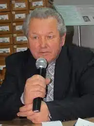
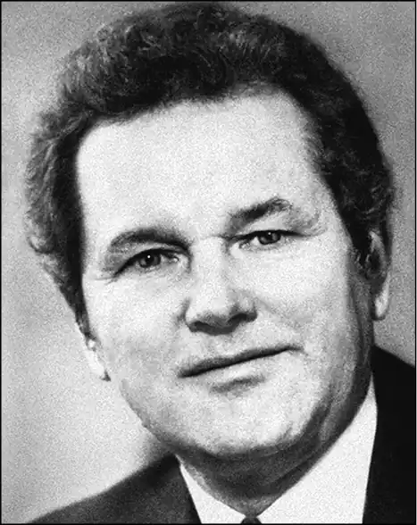

Музичук Аркадій Степанович народився 17 листопала 1942 року в с. Пасіка Грубешів. пов. Люблінського воєводства, Польща – поет, публіцист, кіносценарист.
Заслуженний журналіст України (2011). Літературна премія ім. С. Олійника, ім. Н. Забіли (обидві – 2014), ім. В. Чорновола (2015), ім. Остапа Вишні (2019). Після насильницької депортації 1944 сім'я Музичука спочатку опинилася на Дніпропетровщині, а 1946 – на Рівненщині (с. Глинськ Здолбунівського району), де він навчався у середній школі й розпочав 1959 журналістську діяльність у районній газеті "Нове життя".
Закінчив Київський університет (1969). Працював коментатором Українського телебачення ("Актуальна камера"), був головним редактором студії "Укртелефільм" (1989–95), директором телестудії "Вежа" (1996–2006), головним редактором всеукраїнськиї газет і журналів. Автор низки поетичних збірок, публіцистичних творів, а також сценаріїв понад 40 гостросюжетних документальних фільмів, зокрема повнометражних: "Постскриптум до першого декрету", "Благовіст", "Доля України вишита хрестами", "Колективізація: хроніка насильства", "Голодомор: хроніка терору", "Чорнобиль: хроніка брехні", "Криниця вдовиних сліз", "Імена на граніті". Тематика віршів: біль із приводу голодомору, минулої війни, Чорнобильської катастрофи, спогади про дитинство, туга по матері, замисленість над становищем української мови, відчуття швидкоплинності часу, роздуми про родинне щастя тощо. Поет загалом тяжіє до філософського осмислення людського буття. Пише книги для дітей: "Батькова наука" (1987), "Загадки" (2012), "Сніданок для ведмедика" (2014), "Окраєць від зайця" (2014), "Куряча арифметика" (2015), "Де нічка ночувала" (2015), "Бородатий кіт" (2015), "Заєць з мікрофоном" (2016), "У лісочку на риночку" (2017), "Загадки" (2017), "Лелече новосілля" (2017). Співупорядник та редактор збірки спогадів і документів "У жорнах історії" (2017).